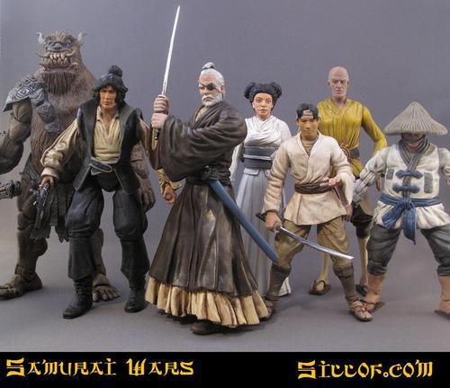
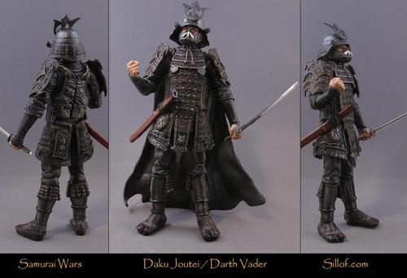
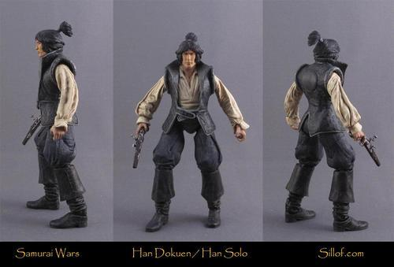

Sat, 28 Aug 2010 12:24:00 · AkiraKurosawa · Jedi · Samurai · Spielberg · Starwars · yoda · Star Wars
If Star Wars Was A Samurai Epic
Ever wonder how would a Jedi look like donning a Samurai outfit, or Darth Vader in that classic Samurai Armour? Well, it’d be equally awesome I assure you, especially since those Jedi were essentially a space samurai anyway. Yup, apparently Mr. Spielberg drew his inspiration from Akira Kurosawa when doodling those characters.


Wait, that’s not all… C3PO, Chewbacca, Han Solo and even Princess Lea got a turn to look as stylish as their Japanese counterpart in their Samurai outfit.

If that’s not cool enough to geek you out, check out the full gallery here http://is.gd/eI5vZ . This awesome collections were brought to you by http://www.sillof.com/ ~ Enjoy!